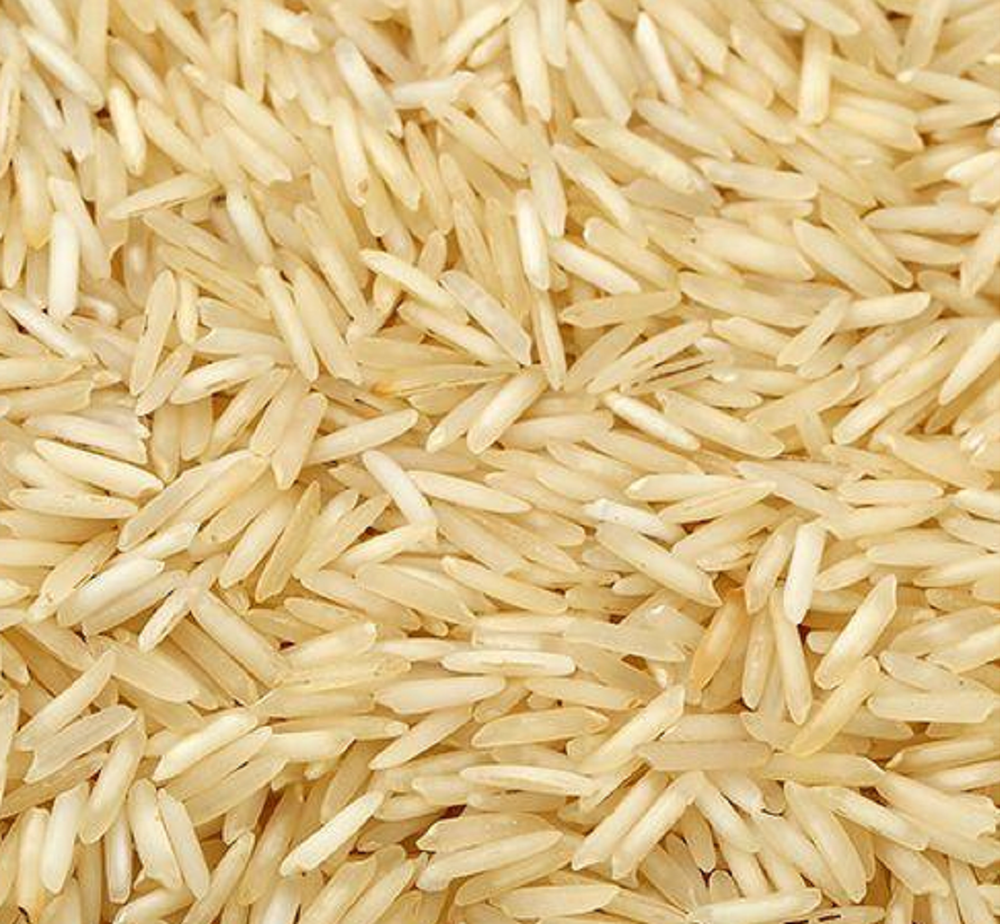
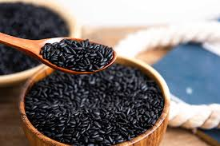
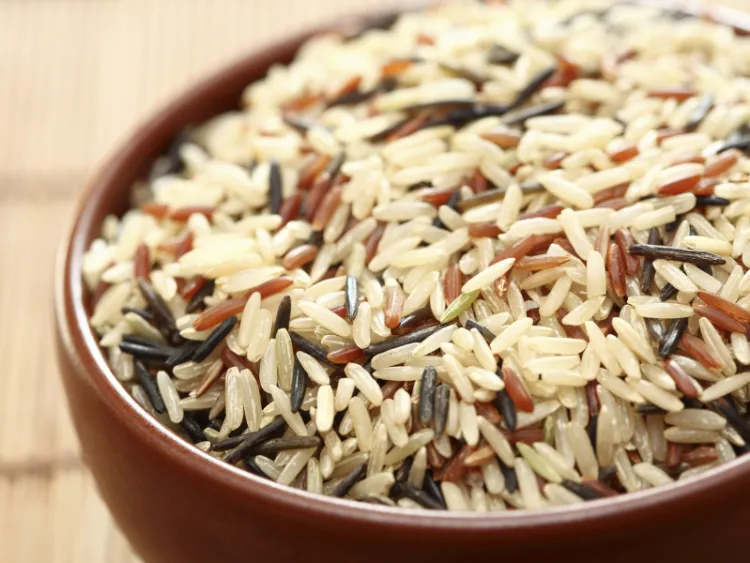
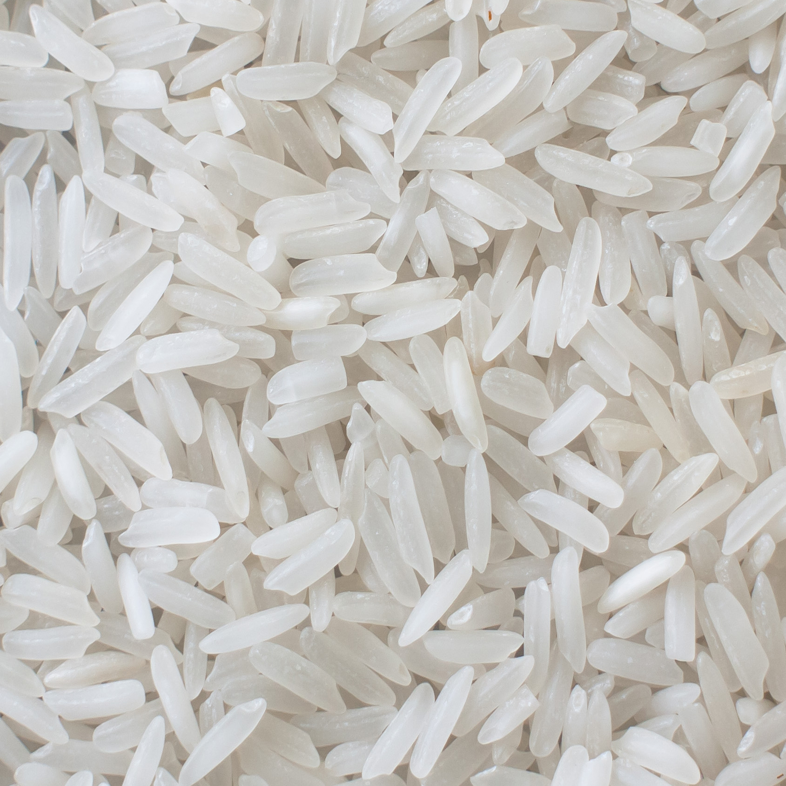

For overall health, brown rice is generally considered the healthiest due to its higher fiber, nutrients, and antioxidant content compared to white rice.
Brown Rice: A whole grain that retains the bran and germ layers, rich in fiber, magnesium, potassium, iron, and B vitamins.
White Rice: Processed to remove bran and germ, resulting in a lower nutrient profile.
Basmati Rice:

Lower glycemic index, good for blood sugar control.
Black Rice:

High in antioxidants, especially anthocyanins.
Wild Rice:

Technically a seed, very high in fiber and nutrients.
Enriched White Rice:

Fortified with nutrients to compensate for processing.